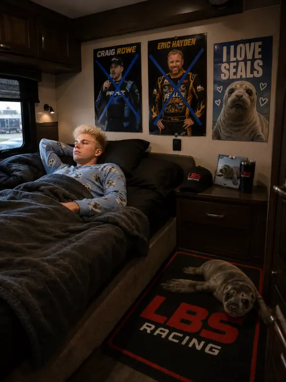
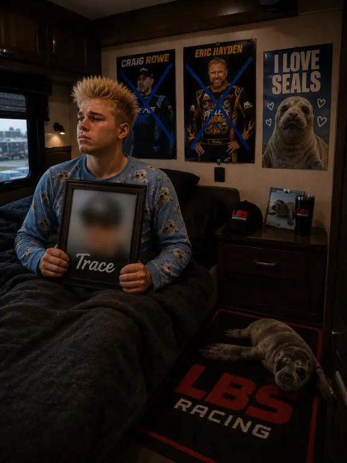

8 AM EST · CHAPTER 01
Lark & Nark
The Morning Begins
@Lark is a driver from Georgia with a pet seal named Nark. Tonight is a huge race at his home track, and with all eyes on him, he knows he needs to stay completely focused. But letting go of the past isn’t always easy. It looks like there’s someone he just can’t stop thinking about. Can Lark put those thoughts behind him and lock in before the green flag? And what exactly are his race day routines that prepare him for the biggest nights of the season? Tune in next hour to follow Larkin’s journey and catch up with the rest of the drivers as race day at EchoPark Speedway continues.

